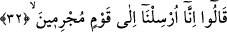
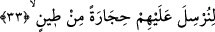
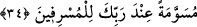

göreviniz nedir” yâni bu müjdeden sonra asıl gönderilmenize sebep olan tehlikeli
durum nedir? diye sordu. “Hatb”, karşılıklı konuşma esnasında söylenen “mühim bir iş”
için kullanılır. Bazen de zorluklar ve sıkıntılar bu kelime ile ifâde olunur. “Hutûbu’z-
zaman” zamanın sıkıntıları tâbirini de bu meyanda kullanmışlardır. Buna benzer başka
kullanımları da vardır. Fâ harfi İbrahim (a.s)’ın onların melek olduklarını
öğrenmesinden hemen sonrasını belirtmek için getirilmiş bir fâ-i tâkibiyedir.
32. «Biz, dediler, suçlu bir kavme gönderildik.»
“Biz cürm ve günahlara devam ve ısrar eden topluluğa gönderildik” dediler. Feth-ur
Rahman’da “günahlara devam edenler”le, isyanların en büyüğünü yapan Lut kavminin
kasdedildiği belirtilmiştir.
33. «Üzerlerine çamurdan taş yağdırmaya (geldik).»
Önceki sûrelerde açıklandığı gibi onların kentlerini altını üstüne getirip çevirdikten
sonra “Üzerlerine çamurdan taşlar” yâni ısıtılarak taş gibi olmuş pişmiş siccîl
taşlarını “salalım.” Siccîl taşı, cehennem ateşinde kızdırılıp üzerlerine hangi insanlara
gönderilecek ise onların isimlerinin yazılı olduğu taştır. Şâyet Allah “tîn/çamur”
kelimesini “hıcâre/taş” kelimesinin yanında zikretmeseydi, “gökten gönderilme”
karînesi sebebiyle bunun normal taş değil de “dolu” olduğu zannedilecekti. İşte
“çamurdan” kelimesinin getirilmesiyle bu zan ortadan kaldırılmıştır.
34. (Bu taşlar,) aşırı gidenler için Rabbinin katında işâretlenmiş (taşlardır).
“Işâretlenmiş” yâni salıverilmiş “taşlar” demektir. Bu kelime, “İhtiyacın olmaması
sebebiyle hayvanı otlaması için otlağa salıverdim, başıboş bıraktım” ifâdesinden
alınmıştır. Sa’dî Müftî bu mânâdan hareketle âyetteki “inde rabbike” ifâdesinin “min”
harf-i cerinin takdiriyle olduğunu söylemiştir.
Bir başka görüşe göre de “müsevveme” kelimesi alamet anlamındaki “sûme”den
gelmekte olup, azap için damgalanmış, üzerinde alâmeti bulunan taşlar demektir. Yine
bu kelimeden muradın beyaz ve kızıl renklerle işâretlenmiş veya yeryüzündeki taşlardan